Renato Nogueira

Atualmente atuando na área de desenvolvimento de sistemas para diversas áreas, entre elas: Física, Matemática, Geofísica, Estatística e Sistemas Ferroviários.

Por volta de 2004 criei muito interesse pela área técnológica, iniciei os estudos em eletrônica concomitantemente com o curso de magistério. Podendo assim juntar tecnologia e educação.
Em 2006 comecei a trabalhar na CPTM (Companhia Paulista de Trens Metropolitanos), onde ainda presto serviço atualmente, tendo a oportunidade de conhecer diversos sistemas relativos ao transporte sobre trilhos. Em 2010, por questões de interesse pelo assunto, comecei a estudar Geofisica, na Universidade de São Paulo (USP), onde permaneci até 2016, neste período desenvolvi uma forte base em matemática e física, atuando concomitantemente como professor de cursos pré-universitários. Em 2017 retornei à USP no curso de bacharelado em Estatística, onde estou atualmente aperfeiçoando meus conhecimentos em análises estatísticas. Paralelo a todas essas atividades, a paixão por programar sempre foi muito grande, o que me levou ao Curso Técnico de Desenvolvimento de Sistemas na Escola Senai Informática, onde tive o primeiro contato com a área de designer de Sites e Desenvolvimentos de Sistemas.
Gosto de me aventurar por diversas áreas e sempre manter a mente ocupada na busca por conhecimento ou na resolução de problemas, caso queira saber mais, sinta-se a vontade para entrar em contato. :)
80% Eletrônica
60% Linguagem C
40% HTML
20% Illustrator
15% CSS
10% Photoshop
90% Elétrica
90% Mecânica
60% Óptica e Termologia
60% Análise de Dados Estatísticos
10% Inferência Estatística
70% Sistemas de Transportes Sobre Trilhos